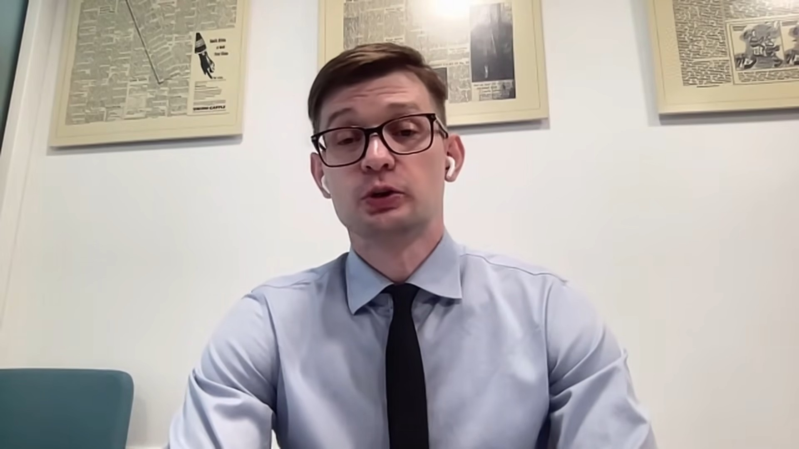

In a wide-ranging interview, DII-Global Europe chair Vitaliy Syzov assesses the current geopolitical landscape around the war in Ukraine — from friction inside the Kremlin to a fast-shifting paradigm in Western military support.

Internal Kremlin instability
Recent arrests of longtime allies of Vladimir Putin in St. Petersburg suggest growing friction within the Russian elite. Syzov argues these purges indicate that inner-circle loyalists may be questioning the effectiveness of the current leadership — friction that could eventually provoke internal structural shifts.
US–Ukraine relations and diplomatic alignment
Recent diplomatic engagements, including a reportedly warm private meeting between Donald Trump and Volodymyr Zelenskyy, point to stabilising relations. Despite political fluctuations in Washington, the underlying military cooperation remains robust — a signal of continued alignment.
The strategic value of deep strikes
Ukrainian strikes on deep-rear Russian infrastructure, such as oil refineries, serve a critical function in the informational war. By exposing the vulnerability of Russian territory, these operations demonstrate to Western allies that Ukraine retains the military initiative — a visible success Syzov calls vital for justifying and sustaining long-term military aid within European institutions.
Western allies have largely abandoned the Kremlin's proposed negotiation agenda — specifically the demand for a Ukrainian withdrawal from the Donbas.
Shifting territorial realities
The resilience of Ukrainian forces has forced a diplomatic reassessment among Western allies, shifting backing toward a more realistic framework that supports Ukraine's current territorial defence, rather than the Kremlin's original demands.
NATO burden-sharing and air defence
Syzov points to a significant shift in defence burden-sharing within NATO. European nations increasingly recognise the urgent need to invest heavily in air defence independently of US contributions, with an accelerated diplomatic push to secure — and potentially manufacture — Patriot interceptors within Europe, protecting both Ukrainian and European airspace.
The risk of asymmetric escalation in Europe
While a full-scale conventional Russian invasion of NATO territory appears militarily irrational, Syzov warns that the threat of a hybrid attack on Europe's eastern flank remains highly realistic. The Kremlin has consistently demonstrated a willingness to make irrational strategic choices, and may increasingly turn to Iranian-style asymmetric tactics — low-tech weapons or hybrid disruptions designed to create severe regional economic and security crises without triggering a massive conventional response.
Watch the full interview. Vitaliy Syzov's assessment was recorded for a Ukrainian broadcast audience.
Watch on YouTube ↗